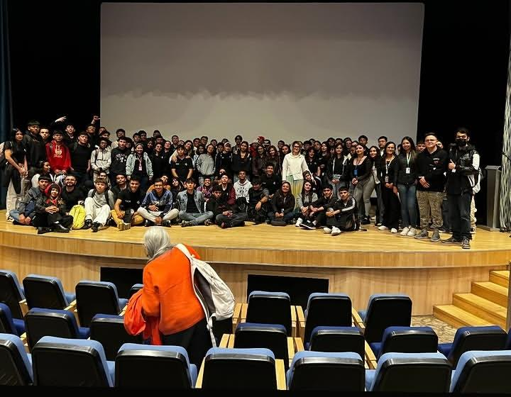
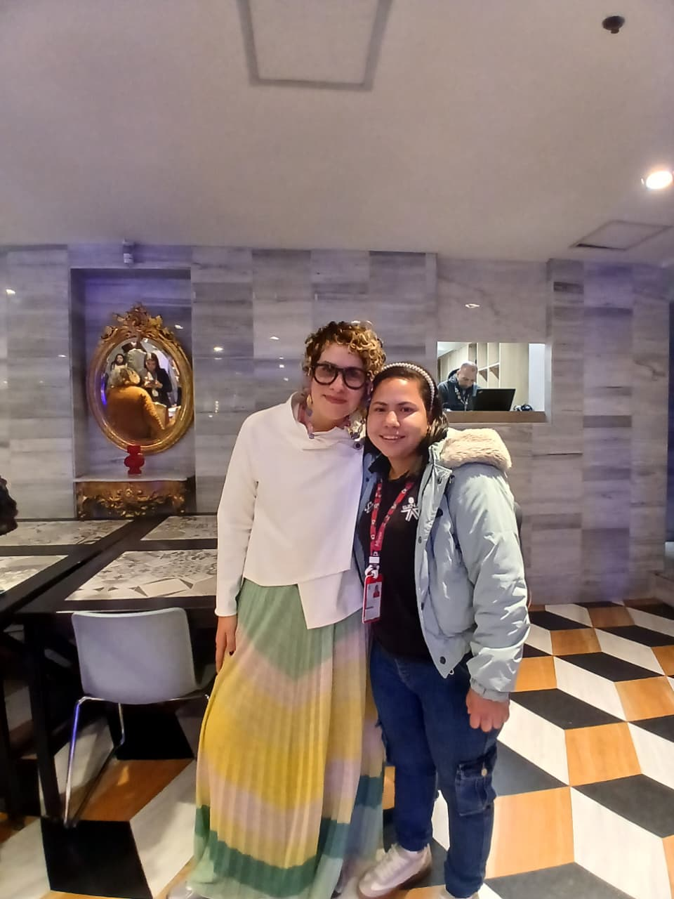

5. Conclusión Final
DIOS COLOR ARTE VIDA
Conclusión General
Después de ver el recorrido de nuestra experiencia en el evento Moda Ecci con la experta Sara Viloria, concluyo diciendo que tras el estudio del círculo cromático todo nuestro vivir está relacionado con el color. En nuestro proceso formativo de programación, el saber combinar los colores es algo muy importante porque cada vez que le ponemos color a nuestras páginas estamos expresando algo; este tipo de experiencias son fundamentales para nuestra formación ya que nos permiten escuchar otros puntos de vista de las cosas y más de personas expertas.

